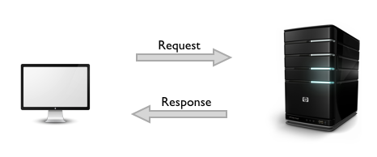

HTTP & RESTful API
2016 Spring Dongyue Web Studio
by
ComMouse
(background image from Rewrite)
Contents
Quick View
Request/Response
HTTP Structure
RESTful API
RESTful API Design
Assignment
Quick View
Request/Response
How can we get access to pages?

How does it work?
HTTP
RESTful API
RESTful API Design
Assignment